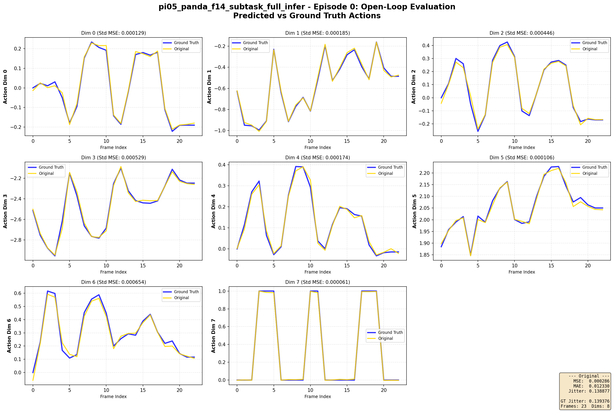
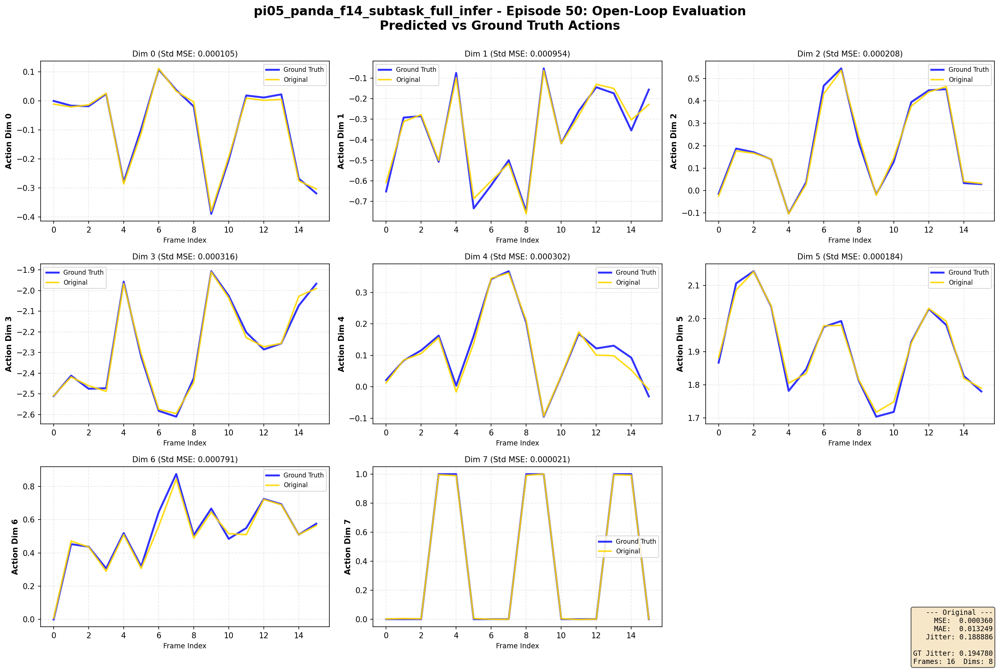
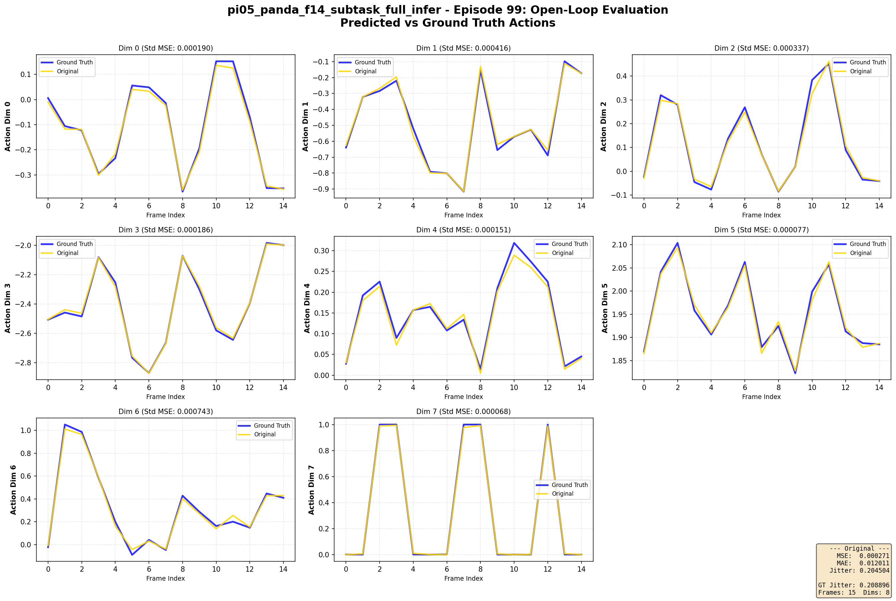

Exclusion Pick-and-Place 평가
Panda π₀.₅ Subtask 10k 평가
텔레옵 시연 198개로 π₀.₅ Base를 전체 미세조정한 10,000-step 체크포인트입니다.
평가 결과와 추론 요청 기록 JSON
Open-loop
학습 시연 0, 50, 99, 149에서 16프레임마다 첫 예측 행동을 실제 명령과 비교했습니다.
총 69개 관측에서 7개 관절의 절대 위치 RMSE는 0.0195 rad이며,
그리퍼 열림·닫힘은 69/69개가 일치했습니다.
시연 0 · 23개 표본 · RMSE 0.0178 rad
예측 및 정답 배열
시연 50 · 16개 표본 · RMSE 0.0202 rad
예측 및 정답 배열
시연 99 · 15개 표본 · RMSE 0.0173 rad
예측 및 정답 배열
시연 149 · 15개 표본 · RMSE 0.0229 rad
예측 및 정답 배열
Closed-loop
Isaac Sim에서 두 카메라와 관절 상태를 동기화하고, 전체 지시문으로 매 추론마다 subtask를 생성했습니다.
절대 관절 위치 청크 50개 중 16개를 15 Hz로 실행한 뒤 새 관측을 입력했습니다.
최대 시뮬레이션 시간은 120초이며, 세 대상 블록이 그릇에 1초간 유지되고 금지 블록이 밖에 있어야 성공입니다.
성공 4/4
| 시드 | 금지색 | 결과 | 최대 투입 | 시간 |
|---|
| 1000 | 빨강 | 성공 | 3/3 | 18.53초 |
|---|
| 1001 | 파랑 | 성공 | 3/3 | 17.07초 |
|---|
| 1002 | 초록 | 성공 | 3/3 | 24.53초 |
|---|
| 1003 | 노랑 | 성공 | 3/3 | 17.87초 |
|---|
시드 1000
시드 1001
시드 1002
시드 1003